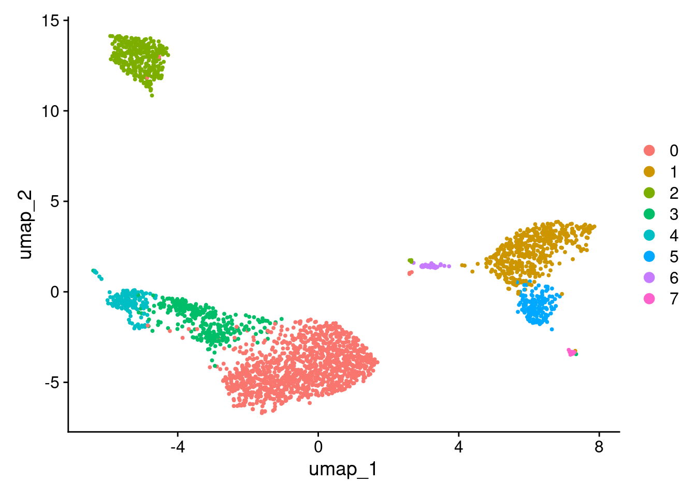
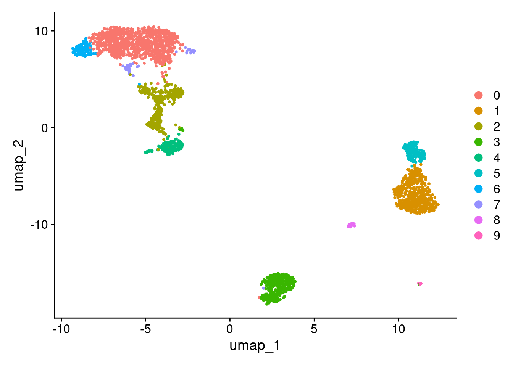

Last updated: 2025-03-11
Checks: 7 0
Knit directory: muse/
This reproducible R Markdown analysis was created with workflowr (version 1.7.1). The Checks tab describes the reproducibility checks that were applied when the results were created. The Past versions tab lists the development history.
Great! Since the R Markdown file has been committed to the Git repository, you know the exact version of the code that produced these results.
Great job! The global environment was empty. Objects defined in the global environment can affect the analysis in your R Markdown file in unknown ways. For reproduciblity it’s best to always run the code in an empty environment.
The command set.seed(20200712) was run prior to running
the code in the R Markdown file. Setting a seed ensures that any results
that rely on randomness, e.g. subsampling or permutations, are
reproducible.
Great job! Recording the operating system, R version, and package versions is critical for reproducibility.
Nice! There were no cached chunks for this analysis, so you can be confident that you successfully produced the results during this run.
Great job! Using relative paths to the files within your workflowr project makes it easier to run your code on other machines.
Great! You are using Git for version control. Tracking code development and connecting the code version to the results is critical for reproducibility.
The results in this page were generated with repository version 4688c40. See the Past versions tab to see a history of the changes made to the R Markdown and HTML files.
Note that you need to be careful to ensure that all relevant files for
the analysis have been committed to Git prior to generating the results
(you can use wflow_publish or
wflow_git_commit). workflowr only checks the R Markdown
file, but you know if there are other scripts or data files that it
depends on. Below is the status of the Git repository when the results
were generated:
Ignored files:
Ignored: .Rproj.user/
Ignored: data/1M_neurons_filtered_gene_bc_matrices_h5.h5
Ignored: data/293t/
Ignored: data/293t_3t3_filtered_gene_bc_matrices.tar.gz
Ignored: data/293t_filtered_gene_bc_matrices.tar.gz
Ignored: data/5k_Human_Donor1_PBMC_3p_gem-x_5k_Human_Donor1_PBMC_3p_gem-x_count_sample_filtered_feature_bc_matrix.h5
Ignored: data/5k_Human_Donor2_PBMC_3p_gem-x_5k_Human_Donor2_PBMC_3p_gem-x_count_sample_filtered_feature_bc_matrix.h5
Ignored: data/5k_Human_Donor3_PBMC_3p_gem-x_5k_Human_Donor3_PBMC_3p_gem-x_count_sample_filtered_feature_bc_matrix.h5
Ignored: data/5k_Human_Donor4_PBMC_3p_gem-x_5k_Human_Donor4_PBMC_3p_gem-x_count_sample_filtered_feature_bc_matrix.h5
Ignored: data/97516b79-8d08-46a6-b329-5d0a25b0be98.h5ad
Ignored: data/Parent_SC3v3_Human_Glioblastoma_filtered_feature_bc_matrix.tar.gz
Ignored: data/brain_counts/
Ignored: data/cl.obo
Ignored: data/cl.owl
Ignored: data/jurkat/
Ignored: data/jurkat:293t_50:50_filtered_gene_bc_matrices.tar.gz
Ignored: data/jurkat_293t/
Ignored: data/jurkat_filtered_gene_bc_matrices.tar.gz
Ignored: data/pbmc20k/
Ignored: data/pbmc20k_seurat/
Ignored: data/pbmc3k/
Ignored: data/pbmc3k_seurat.rds
Ignored: data/pbmc4k_filtered_gene_bc_matrices.tar.gz
Ignored: data/pbmc_1k_v3_filtered_feature_bc_matrix.h5
Ignored: data/pbmc_1k_v3_raw_feature_bc_matrix.h5
Ignored: data/refdata-gex-GRCh38-2020-A.tar.gz
Ignored: data/seurat_1m_neuron.rds
Ignored: data/t_3k_filtered_gene_bc_matrices.tar.gz
Ignored: r_packages_4.4.1/
Untracked files:
Untracked: analysis/bioc_scrnaseq.Rmd
Note that any generated files, e.g. HTML, png, CSS, etc., are not included in this status report because it is ok for generated content to have uncommitted changes.
These are the previous versions of the repository in which changes were
made to the R Markdown (analysis/seurat_v4_vs_v5.Rmd) and
HTML (docs/seurat_v4_vs_v5.html) files. If you’ve
configured a remote Git repository (see ?wflow_git_remote),
click on the hyperlinks in the table below to view the files as they
were in that past version.
| File | Version | Author | Date | Message |
|---|---|---|---|---|
| Rmd | 4688c40 | Dave Tang | 2025-03-11 | Overdispersion exists in all scRNA-seq datasets if sufficiently sequenced |
| html | 6248d96 | Dave Tang | 2025-03-11 | Build site. |
| Rmd | d47858c | Dave Tang | 2025-03-11 | Pearson residuals |
| html | 747fe3f | Dave Tang | 2025-03-11 | Build site. |
| Rmd | 4aacb58 | Dave Tang | 2025-03-11 | Error versus variance |
| html | fc7e28d | Dave Tang | 2025-03-11 | Build site. |
| Rmd | 6139935 | Dave Tang | 2025-03-11 | Introduction to modelling variance |
| html | 94116b1 | Dave Tang | 2025-03-10 | Build site. |
| Rmd | 4c187b3 | Dave Tang | 2025-03-10 | Data layer |
| html | 0d51a69 | Dave Tang | 2025-03-10 | Build site. |
| Rmd | 48661b3 | Dave Tang | 2025-03-10 | Seurat version 4 vs. 5 |
The paper Comparison and evaluation of statistical error models for scRNA-seq is the basis for the default approach used in Seurat version 5. The following is text from the paper:
Using statistical models like Generalised Linear Models:
If a regression model doesn’t fully explain variability, the residuals might contain structure that another technique can capture to uncover hidden patterns. For example, if a regression model captures main trends, applying Principal Component Analysis (PCA) on residuals can find underlying structures in the unexplained variance. Another use case can be clustering on residuals to group data points based on deviations from a model.
Parameterising statistical models:
\[ Y = f(X) + \epsilon \]
where \(\epsilon\) captures random fluctuations or unknown influences.
While error contributes to variance, they are distinct:
Errors can be random (causing variability) or systematic (bias), but variance is a quantification of dispersion.
\[ r_i = \frac{y_i - \hat{y}_i}{\sqrt{\text{Var}(y_i)}} \]
where:
* \(y_i\) = observed count
* \(\hat{y}_i\) = predicted mean
(expected value under the model)
* \(\text{Var}(y_i)\) = model-estimated
variance of \(y_i\)
\[ \text{Var}(y_i) = \hat{y}_i + \frac{\hat{y}_i^2}{\theta} \]
This means the variance grows faster than the mean, making negative binomial regression suitable when count data has extra variability.
Pearson residuals focus on variance-adjusted differences and deviance residuals come from likelihood-based goodness-of-fit measures. They both help diagnose model fit, but deviance residuals tend to emphasise extreme deviations more. Pearson residuals in negative binomial regression are useful for model diagnostics, particularly for checking overdispersion and assessing fit.
Import raw pbmc3k dataset from my server.
seurat_obj <- readRDS(url("https://davetang.org/file/pbmc3k_seurat.rds", "rb"))
seurat_objAn object of class Seurat
32738 features across 2700 samples within 1 assay
Active assay: RNA (32738 features, 0 variable features)
1 layer present: countsFilter.
pbmc3k <- CreateSeuratObject(
counts = seurat_obj@assays$RNA$counts,
min.cells = 3,
min.features = 200,
project = "pbmc3k"
)
pbmc3kAn object of class Seurat
13714 features across 2700 samples within 1 assay
Active assay: RNA (13714 features, 0 variable features)
1 layer present: countsProcess with the Seurat 4 workflow.
seurat_wf_v4 <- function(seurat_obj, scale_factor = 1e4, num_features = 2000, num_pcs = 30, cluster_res = 0.5, debug_flag = FALSE){
seurat_obj <- NormalizeData(seurat_obj, normalization.method = "LogNormalize", scale.factor = scale_factor, verbose = debug_flag)
seurat_obj <- FindVariableFeatures(seurat_obj, selection.method = 'vst', nfeatures = num_features, verbose = debug_flag)
seurat_obj <- ScaleData(seurat_obj, verbose = debug_flag)
seurat_obj <- RunPCA(seurat_obj, verbose = debug_flag)
seurat_obj <- RunUMAP(seurat_obj, dims = 1:num_pcs, verbose = debug_flag)
seurat_obj <- FindNeighbors(seurat_obj, dims = 1:num_pcs, verbose = debug_flag)
seurat_obj <- FindClusters(seurat_obj, resolution = cluster_res, verbose = debug_flag)
seurat_obj
}
pbmc3k_v4 <- seurat_wf_v4(pbmc3k)Warning: The default method for RunUMAP has changed from calling Python UMAP via reticulate to the R-native UWOT using the cosine metric
To use Python UMAP via reticulate, set umap.method to 'umap-learn' and metric to 'correlation'
This message will be shown once per sessionpbmc3k_v4An object of class Seurat
13714 features across 2700 samples within 1 assay
Active assay: RNA (13714 features, 2000 variable features)
3 layers present: counts, data, scale.data
2 dimensional reductions calculated: pca, umapUMAP.
DimPlot(pbmc3k_v4, reduction = "umap")
| Version | Author | Date |
|---|---|---|
| 0d51a69 | Dave Tang | 2025-03-10 |
seurat_wf_v5 <- function(seurat_obj, scale_factor = 1e4, num_features = 2000, num_pcs = 30, cluster_res = 0.5, debug_flag = FALSE){
seurat_obj <- SCTransform(seurat_obj, verbose = debug_flag)
seurat_obj <- RunPCA(seurat_obj, verbose = debug_flag)
seurat_obj <- RunUMAP(seurat_obj, dims = 1:num_pcs, verbose = debug_flag)
seurat_obj <- FindNeighbors(seurat_obj, dims = 1:num_pcs, verbose = debug_flag)
seurat_obj <- FindClusters(seurat_obj, resolution = cluster_res, verbose = debug_flag)
seurat_obj
}
pbmc3k_v5 <- seurat_wf_v5(pbmc3k)
pbmc3k_v5An object of class Seurat
26286 features across 2700 samples within 2 assays
Active assay: SCT (12572 features, 3000 variable features)
3 layers present: counts, data, scale.data
1 other assay present: RNA
2 dimensional reductions calculated: pca, umapUMAP.
DimPlot(pbmc3k_v5, reduction = "umap")
| Version | Author | Date |
|---|---|---|
| 0d51a69 | Dave Tang | 2025-03-10 |
Version 4 store log normalised data.
colSums(pbmc3k_v4@assays$RNA$data)[1:6]AAACATACAACCAC-1 AAACATTGAGCTAC-1 AAACATTGATCAGC-1 AAACCGTGCTTCCG-1
1605.823 2027.859 2040.169 1902.960
AAACCGTGTATGCG-1 AAACGCACTGGTAC-1
1388.125 1653.061 The data layer is in the SCT assay.
colSums(pbmc3k_v5@assays$SCT$data)[1:6]AAACATACAACCAC-1 AAACATTGAGCTAC-1 AAACATTGATCAGC-1 AAACCGTGCTTCCG-1
786.2686 1024.4731 1029.3032 934.4454
AAACCGTGTATGCG-1 AAACGCACTGGTAC-1
666.1142 764.8101 More granular clustering of version 4’s cluster 0 in version 5.
stopifnot(all(row.names(pbmc3k_v4@meta.data) == row.names(pbmc3k_v5@meta.data)))
table(
pbmc3k_v4@meta.data$seurat_clusters,
pbmc3k_v5@meta.data$seurat_clusters
)
0 1 2 3 4 5 6 7 8 9
0 970 0 71 2 0 0 100 44 0 0
1 0 479 0 0 0 9 0 0 3 0
2 1 0 0 349 0 0 0 1 0 0
3 4 0 290 1 5 0 0 1 0 0
4 0 0 5 6 152 0 0 0 0 0
5 0 16 0 0 0 145 0 0 0 0
6 0 1 0 0 0 0 0 0 31 0
7 0 1 0 1 0 0 0 0 0 12More information text from the paper Comparison and evaluation of statistical error models for scRNA-seq.
sessionInfo()R version 4.4.1 (2024-06-14)
Platform: x86_64-pc-linux-gnu
Running under: Ubuntu 22.04.5 LTS
Matrix products: default
BLAS: /usr/lib/x86_64-linux-gnu/openblas-pthread/libblas.so.3
LAPACK: /usr/lib/x86_64-linux-gnu/openblas-pthread/libopenblasp-r0.3.20.so; LAPACK version 3.10.0
locale:
[1] LC_CTYPE=en_US.UTF-8 LC_NUMERIC=C
[3] LC_TIME=en_US.UTF-8 LC_COLLATE=en_US.UTF-8
[5] LC_MONETARY=en_US.UTF-8 LC_MESSAGES=en_US.UTF-8
[7] LC_PAPER=en_US.UTF-8 LC_NAME=C
[9] LC_ADDRESS=C LC_TELEPHONE=C
[11] LC_MEASUREMENT=en_US.UTF-8 LC_IDENTIFICATION=C
time zone: Etc/UTC
tzcode source: system (glibc)
attached base packages:
[1] stats graphics grDevices utils datasets methods base
other attached packages:
[1] Seurat_5.2.1 SeuratObject_5.0.2 sp_2.2-0 lubridate_1.9.4
[5] forcats_1.0.0 stringr_1.5.1 dplyr_1.1.4 purrr_1.0.4
[9] readr_2.1.5 tidyr_1.3.1 tibble_3.2.1 ggplot2_3.5.1
[13] tidyverse_2.0.0 workflowr_1.7.1
loaded via a namespace (and not attached):
[1] RColorBrewer_1.1-3 rstudioapi_0.17.1
[3] jsonlite_1.9.1 magrittr_2.0.3
[5] spatstat.utils_3.1-2 farver_2.1.2
[7] rmarkdown_2.29 zlibbioc_1.52.0
[9] fs_1.6.5 vctrs_0.6.5
[11] ROCR_1.0-11 DelayedMatrixStats_1.28.1
[13] spatstat.explore_3.3-4 S4Arrays_1.6.0
[15] htmltools_0.5.8.1 SparseArray_1.6.2
[17] sass_0.4.9 sctransform_0.4.1
[19] parallelly_1.42.0 KernSmooth_2.23-24
[21] bslib_0.9.0 htmlwidgets_1.6.4
[23] ica_1.0-3 plyr_1.8.9
[25] plotly_4.10.4 zoo_1.8-13
[27] cachem_1.1.0 whisker_0.4.1
[29] igraph_2.1.4 mime_0.12
[31] lifecycle_1.0.4 pkgconfig_2.0.3
[33] Matrix_1.7-0 R6_2.6.1
[35] fastmap_1.2.0 GenomeInfoDbData_1.2.13
[37] MatrixGenerics_1.18.1 fitdistrplus_1.2-2
[39] future_1.34.0 shiny_1.10.0
[41] digest_0.6.37 colorspace_2.1-1
[43] S4Vectors_0.44.0 patchwork_1.3.0
[45] ps_1.9.0 rprojroot_2.0.4
[47] tensor_1.5 RSpectra_0.16-2
[49] irlba_2.3.5.1 GenomicRanges_1.58.0
[51] labeling_0.4.3 progressr_0.15.1
[53] spatstat.sparse_3.1-0 timechange_0.3.0
[55] httr_1.4.7 polyclip_1.10-7
[57] abind_1.4-8 compiler_4.4.1
[59] withr_3.0.2 fastDummies_1.7.5
[61] MASS_7.3-60.2 DelayedArray_0.32.0
[63] tools_4.4.1 lmtest_0.9-40
[65] httpuv_1.6.15 future.apply_1.11.3
[67] goftest_1.2-3 glmGamPoi_1.18.0
[69] glue_1.8.0 callr_3.7.6
[71] nlme_3.1-164 promises_1.3.2
[73] grid_4.4.1 Rtsne_0.17
[75] getPass_0.2-4 cluster_2.1.6
[77] reshape2_1.4.4 generics_0.1.3
[79] gtable_0.3.6 spatstat.data_3.1-4
[81] tzdb_0.4.0 data.table_1.17.0
[83] hms_1.1.3 XVector_0.46.0
[85] BiocGenerics_0.52.0 spatstat.geom_3.3-5
[87] RcppAnnoy_0.0.22 ggrepel_0.9.6
[89] RANN_2.6.2 pillar_1.10.1
[91] spam_2.11-1 RcppHNSW_0.6.0
[93] later_1.4.1 splines_4.4.1
[95] lattice_0.22-6 survival_3.6-4
[97] deldir_2.0-4 tidyselect_1.2.1
[99] miniUI_0.1.1.1 pbapply_1.7-2
[101] knitr_1.49 git2r_0.35.0
[103] gridExtra_2.3 IRanges_2.40.1
[105] SummarizedExperiment_1.36.0 scattermore_1.2
[107] stats4_4.4.1 xfun_0.51
[109] Biobase_2.66.0 matrixStats_1.5.0
[111] UCSC.utils_1.2.0 stringi_1.8.4
[113] lazyeval_0.2.2 yaml_2.3.10
[115] evaluate_1.0.3 codetools_0.2-20
[117] cli_3.6.4 uwot_0.2.3
[119] xtable_1.8-4 reticulate_1.41.0
[121] munsell_0.5.1 processx_3.8.6
[123] jquerylib_0.1.4 GenomeInfoDb_1.42.3
[125] Rcpp_1.0.14 globals_0.16.3
[127] spatstat.random_3.3-2 png_0.1-8
[129] spatstat.univar_3.1-2 parallel_4.4.1
[131] dotCall64_1.2 sparseMatrixStats_1.18.0
[133] listenv_0.9.1 viridisLite_0.4.2
[135] scales_1.3.0 ggridges_0.5.6
[137] crayon_1.5.3 rlang_1.1.5
[139] cowplot_1.1.3